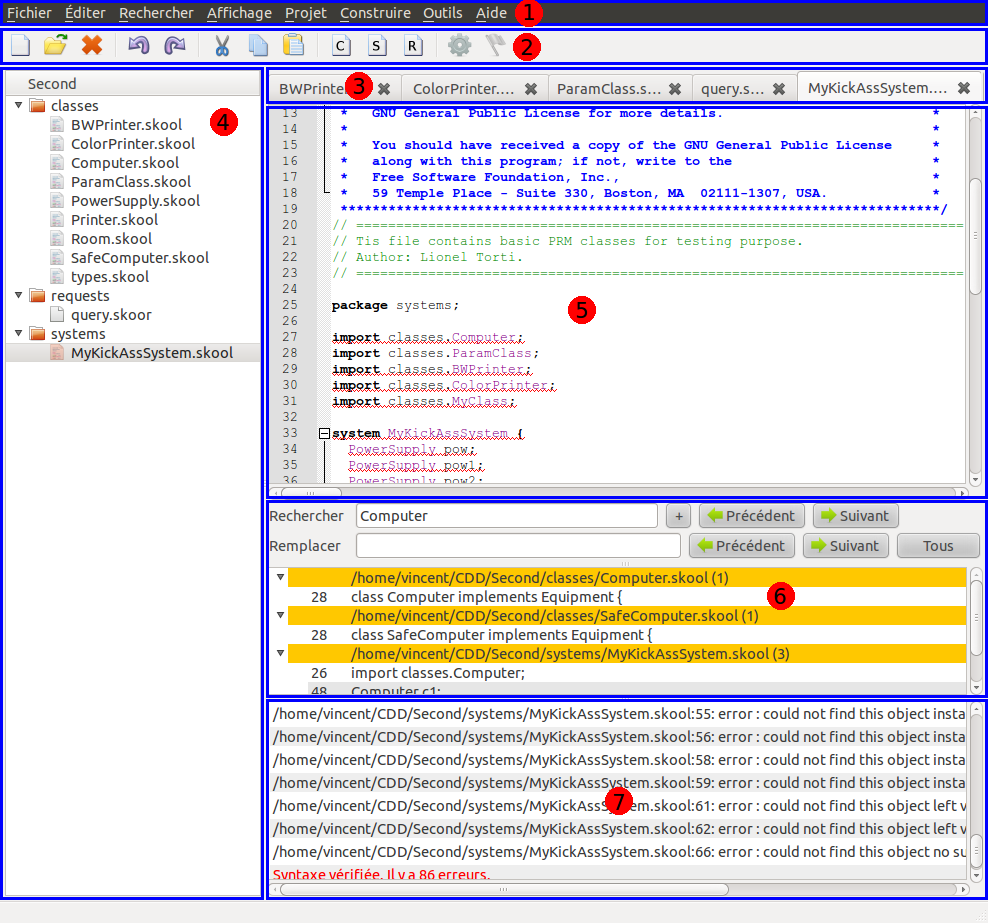

SkoobEditor est un logiciel open-source sous licence GPL version 3.
Il a été développé par Vincent Renaudineau et Pierre-Henri Wuillemin dans le cadre du projet SKOOB.
C'est un EDI, un Environnement de Développement Intégré, c'est à dire qu'il a pour but de faciliter à la fois la création et l'édition de fichier SKOOL et SKOOR, et la gestion des projets.
Double cliquez sur l'installateur. Ce dernier installera tous les fichiers nécessaires à leur place (par défaut C:\Programs File\SkoobEditor). Il créera de plus un raccourci dans le menu démarrer.
Double cliquez sur l'installateur. Ce dernier installera tous les fichiers nécessaires à leur place. L'exécutable ce trouve dans /usr/bin et se nomme skoobeditor. Il n'y a pour le moment pas de raccourcis, ceux-ci étant différents en fonction de l'OS et du gestionnaire de bureau.
Téléchargez et installez Qt (version >= 4.7). Pour cela téléchargez l'installateur (avec le compilateur mingw32 de préférence) et lancez le. Vérifiez que la variable système QTDIR est bien définie avec l'emplacement où ce trouve Qt, et vérifiez aussi que la variable PATH contient bien :
%QTDIR%\bin;%QTDIR%\qt\bin;%QTDIR%\qt\lib;
Installez ensuite QScintilla (version >= 2.4.6). Pour cela téléchargez les sources à partir du site et décompressez-les. Ouvrez un terminal puis rendez-vous dans le dossier Qt4. Ensuite taper les commandes :
qmake
mingw32-make release
mingw32-make install
S'il y a des erreurs, c'est que les variables d'environnement ne sont pas bien définies.
Téléchargez les sources d'agrum à l'aide d'un client svn :
svn checkout https://alm.lip6.fr/svn/agrum/trunk
Rendez vous dans trunk/apps/skoobeditor puis lancez la commande :
mingw32-make installer
L'installateur se trouvera dans le dossier bin.
Installez Qt (version >= 4.7) à partir des dépôts de votre distribution. Installez ensuite QScintilla (version >= 2.4.6), soit à partir des dépôts, soit à partir des sources si la version dans les dépôts est trop vieille. Pour cela téléchargez les sources à partir du site et décompressez-les. Ouvrez un terminal puis rendez-vous dans le dossier Qt4. Ensuite taper les commandes :
qmake
make release
sudo make install
Téléchargez les sources d'agrum à l'aide d'un client svn :
svn checkout https://alm.lip6.fr/svn/agrum/trunk
Rendez vous dans trunk/apps/skoobeditor puis lancez la commande
make
L'exécutable se trouvera dans le dossier bin/Release.
Le logiciel se découpe en 7 zones :

Vous y trouverez toutes les fonctionnalités disponibles, ainsi que les raccourcis clavier.
Fichier : on y trouve toutes les opérations relatives aux fichiers (créer un nouveau fichier, en ouvrir un existant, sauvegarder, fermer, etc) et quitter le programme.
Éditer : on y trouve les opérations d'édition ou de modification d'un fichier ouvert (couper, coller, indenter, commenter, etc) et le menu des préférences du programme.
Rechercher : on y trouve les fonctionnalités de recherche (simple ou avancée), de remplacement et de déplacement dans le fichier,
Affichage : on y trouve les fonctionnalités qui permettent d'afficher ou cacher les éléments de l'interface, et le zoom.
Projet : on y trouve les fonctionnalités ayant trait à la gestion de projet (créer un nouveau projet, en ouvrir un déjà existant, créer des fichiers) de même que les propriétés du projet.
Construire : on y trouve les fonctionnalités de construction, c'est à dire la vérification de la syntaxe et l'exécution des fichiers de requêtes.
Ce sont des raccourcis vers les fonctionnalités les plus utilisées.
Ce sont tous les fichiers ouverts. Vous pouvez les réordonner par glisser-déposer et les fermer en cliquant sur la croix associée.
On y voit les packages et fichiers présents dans le projet ouvert. Pour plus de détails, consulter Gestion d'un projet
On y voit les packages et fichiers présents dans le projet ouvert. Pour plus de détails, consulter Édition d'un document
Celui-ci n'est visible que lorsqu'une recherche est en cours. Il faut appuyé sur la touche « Échap » pour le faire disparaître. Il est lui même décomposé en 3 parties :
Pour plus de renseignement, consulter Recherche rapide, recherche avancée et remplacement.
C'est l'endroit où s'affiche les erreurs de syntaxes s'il y en a, de même que les résultats des requêtes. Il suffit de double cliquer sur une erreur pour s'y rendre. Pour le faire disparaître, appuyer sur « Échap ».
Lors de l'édition d'un fichier, les raccourcis habituels (couper, copier, coller, tout sélectionner, sélection par mot, jusqu'au début ou à la fin de ligne, etc) sont disponibles, de même que la coloration du code.
Il y aussi quelques éléments supplémentaires, que l'on peut voir sur la capture d'écran ci-dessous :
En plus de faciliter l'édition de fichier SKOOL ou SKOOR, SkoobEditor facilite la gestion de projet.
Le projet permet de vérifier directement dans l'application s'il y a des erreurs, de façon automatique ou non, de même que d'effectuer les requêtes demandées et d'en voir les résultats.
Pour créer un projet, rendez-vous dans le menu « Projet » et cliquez sur « Nouveau ».
Trois packages vides sont créés :
Ces packages sont la base du projet. Vous pourrez en créer d'autres vous même. Ils permettent une bonne séparation des différents composants.
Vous pouvez maintenant créer les structures dont vous avez besoin, en cliquant sur les boutons appropriés dans la barre d'outils (« Créer un nouveau fichier classe », « Créer un nouveau fichier système » ou « Créer un nouveau fichier requête »). Ceux-ci seront mis dans le package adéquat.
Si votre projet requière des types, classes ou systèmes créés en dehors du projet et donc présents dans un répertoire différent, vous pouvez préciser l'emplacement de ceux-ci dans les propriétés du projet, afin que l'interpréteur les trouve.
Dans l'explorateur de projet vous pouvez trouver tous les fichiers du projet, de même que leur organisation en package.
Vous pouvez directement y ajouter des packages, des fichiers, les supprimer, les renommer, et exécuter des fichiers de requêtes par le menu contextuel (clic droit), ainsi que les déplacer par drag and drop. Mais attention, ces modifications n'affectent que les fichiers, et ne font pas de changements dans le code de ceux-ci (par exemple, déplacer un fichier ne changera pas son package et ne mettra pas les importations des autres fichiers à jour), c'est à vous de mettre à jour ces informations.
Mais cette tâche peut s'avérer fastidieuse. Vous pouvez à la place utiliser le "refactoring". Le refactoring, en plus de faire la modification souhaitée sur le fichier, met à jour les informations dans tout le projet. Ainsi, si un fichier est renommé, le nom de la classe ou du système qu'il contient est renommé de la même façon, et les importations dans les autres fichiers sont mis à jour. Il en va de même pour le déplacement qui met à jour les packages et la suppression. (Cette fonctionnalité sera disponible dans la prochaine version)
Vous pouvez à tout moment faire une recherche rapide dans le document en cours d'édition. Les résultats sont surlignés directement dans le document.
Vous pouvez préciser quelques options : si la recherche doit prendre en compte la casse des caractères ; si la recherche ne doit prendre en compte que les mots entiers (et donc ne pas chercher à l'intérieur des mots) ; si la recherche utilise les expressions régulières (cf la documentation de Qt [en], ou celle d'Unix [fr]).
De même, une fois que la recherche est définie, vous pouvez remplacer les résultats concordant de la recherche par autre chose, dans la zone de remplacement. Vous pouvez remplacer tout les résultats en une seule fois, ou au cas par cas. Pour cela, si vous voulez remplacer le résultat actuel, cliquez sur le bouton « Suivant » à coté du champ « Remplacer ». Si vous ne voulez pas remplacer le résultat actuel et passer au suivant, cliquez sur le bouton « Suivant » à coté du champ « Rechercher ».
Si vous devez faire une recherche sur l'ensemble des fichiers du projet, ou des fichiers ouverts, vous devez alors passer par la recherche avancée. Une fenêtre de dialogue s'ouvre pour vous demander tous les renseignements nécessaires. S'il s'agit d'un remplacement, vous pouvez faire « tout remplacer ». Pensez à sauvegarder les fichiers ouverts ! Sinon faîtes « rechercher », les résultats s'afficheront dans le dock de recherche (cf 3). Double cliquez dessus pour vous y rendre.